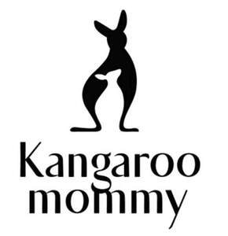

Trade Mark Journal No.2025/035 29 August 2025
UK00004251543 19 August 2025 (3,5,21)

- Class 3
- Cleansing milk for toilet purposes; Shampoos; Hair lotions; Body washes; Skin care oils [cosmetic]; Laundry preparations; Cosmetics; Cosmetics for children; Make-up for the face and body; Serums for cosmetic purposes; Face creams; Baby oils; Beauty masks; Sun-block lotions; Foundation; Lipsticks; Make-up removing preparations; Toothpaste; Cotton wool for cosmetic purposes; Facial cleansing milk; Mouth washes, not for medical purposes; Cleansers for intimate personal hygiene purposes, non medicated.
- Class 5
- Vitamin preparations; Cod liver oil; Pharmaceutical preparations for skin care; Antibacterial soap; Antibacterial handwashes; Disinfectants; Nutritional supplements; Food for babies; Powdered milk for babies; Depuratives; Mosquito repellents; Acaricides; Sanitary panties; Sanitary towels; Babies' diapers; Babies' diaper-pants; Breast-nursing pads; Surgical dressings; Dental lacquer; Dietary fibre.
- Class 21
- Utensils for household purposes; Tableware, other than knives, forks and spoons; Heaters for feeding bottles, non-electric; Drinking vessels; Baby baths, portable; Shampoo shields; Combs; Brushes; Toothbrushes; Floss for dental purposes; Cosmetic utensils; Toilet cases; Bath sponges; Make-up sponges; Make-up brushes; Insulating flasks; Cleaning instruments, hand-operated; Plug-in diffusers for mosquito repellents.
Guangzhou Natuspace Biotechnology Co., Ltd.
Representative: Handsome I.P. Ltd